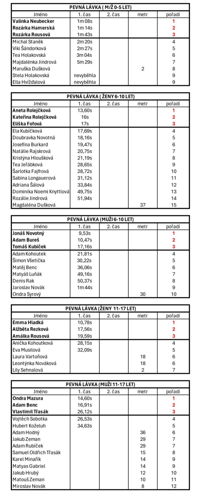
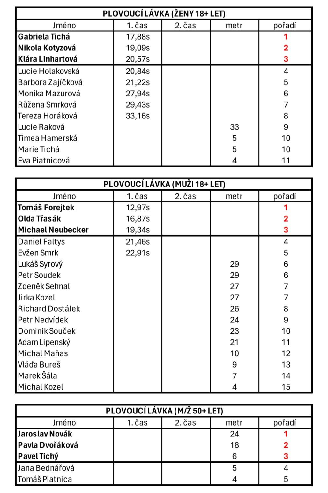
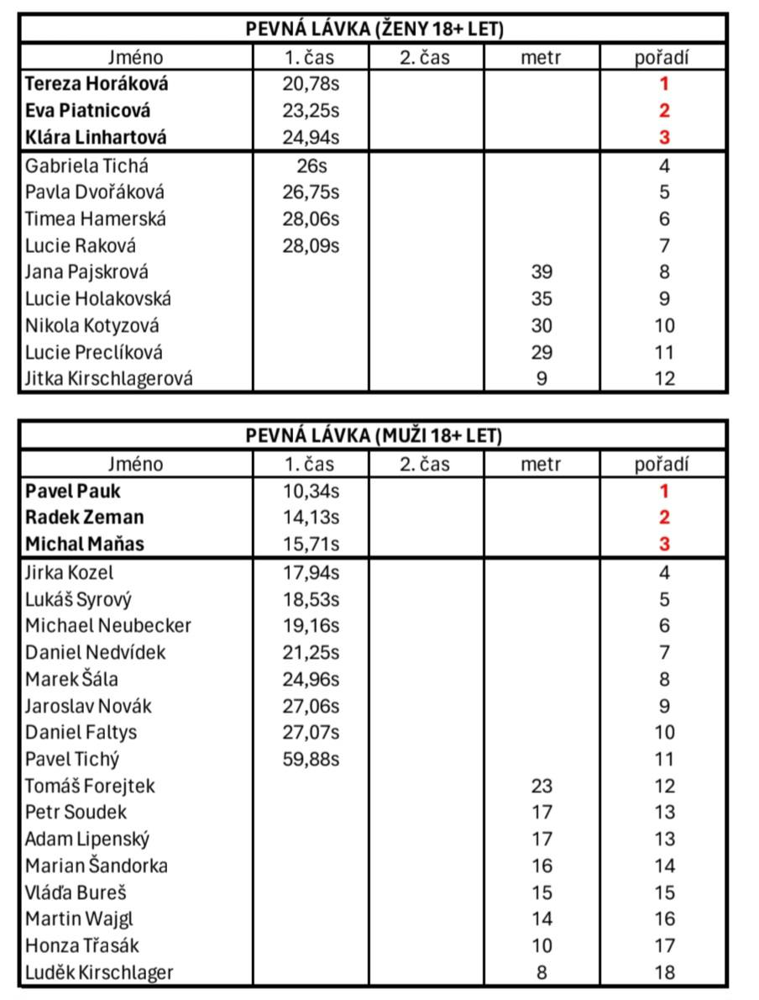
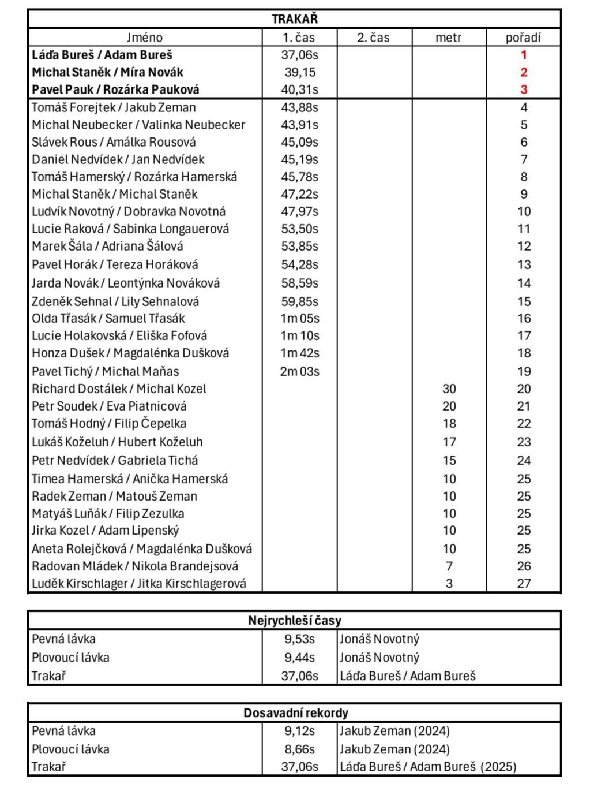
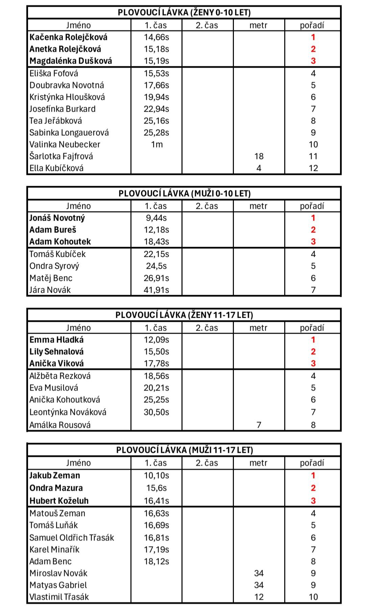

Shrnutí Zdelovské lávky 2025
Minulý ročník Zdelovské lávky přinesl spoustu skvělých zážitků a nezapomenutelných okamžiků. Soutěžící se opět předvedli v plné parádě a atmosféra byla naprosto fantastická.
Den patřil soutěžím, vodě, fandění a pohodové náladě v areálu. Večerní část pak rozhýbala kapela Plazma, která se postarala o živou hudbu a příjemné zakončení celé akce.
V galerii níže si můžete prohlédnout výsledkové listiny z jednotlivých disciplín. Děkujeme všem účastníkům, dobrovolníkům i divákům, kteří vytvořili neopakovatelnou atmosféru.
Výsledky





Nejrychlejší časy
- Pevná lávka: 9,53 s - Jonáš Novotný
- Plovoucí lávka: 9,44 s - Jonáš Novotný
- Trakař: 37,06 s - Láďa Bureš / Adam Bureš
Dosavadní rekordy
- Pevná lávka: 9,12 s - Jakub Zeman (2024)
- Plovoucí lávka: 8,66 s - Jakub Zeman (2024)
- Trakař: 37,06 s - Láďa Bureš / Adam Bureš (2025)
Celou fotogalerii ze Zdelovské lávky 2025 si můžete prohlédnout na portálu Rajče.
Autorem fotografií je Tomáš Piatnica. Děkujeme za krásné snímky, které zachycují atmosféru akce.